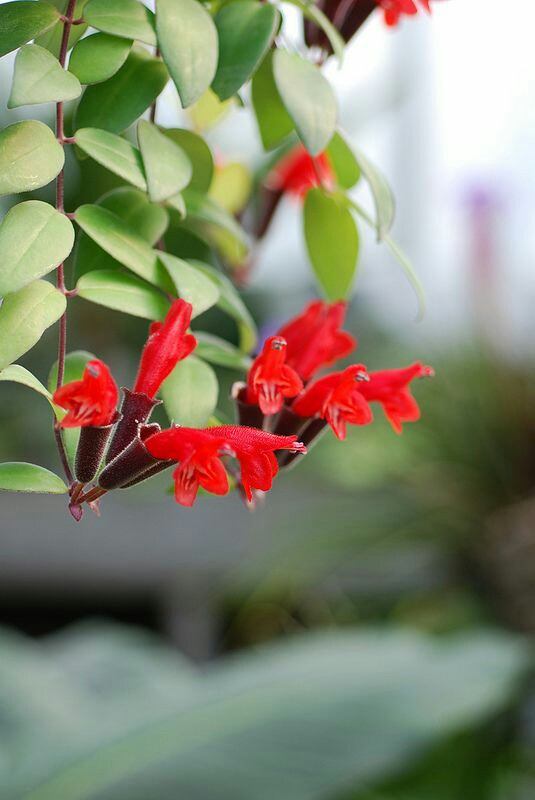

AESCYHNANTHUS (BUNGA LIPSTIK)
Tanaman bunga lipstik (Aeschynanthus radicans) dalam Bahasa Inggris disebut lipstick plant / basket vine.Tanaman ini dijadikan tanaman hias gantung di Indonesia, cocok untuk digantung di teras rumah. Bunga berwarna merah dengan bentuk benar-benar seperti lipstik, tahan mekar hingga 2 minggu, dedaunan seakan merambat dan jatuh ke bawah keranjang (menjuntai turun). Sangat direkomendasikan sebagai tanaman gantung berbunga indah.Nama ilmiah (botanical name): Aeschynanthus radicans
Bibit berasal dari: tunas akar
Rekomendasi dataran dan kondisi tempat tumbuh optimal: dataran rendah – tinggi, suhu panas maupun dingin
Kebutuhan sinar matahari: partial shade (di bawah naungan / teduh)
Kapan berbunga: dalam bulan tertentu
Jumlah kuntum bunga yang dihasilkan per tanaman: belasan
Bunga harum: tidak
Jika ditanam di pot, rekomendasi ukuran pot: diameter 20-30 cm
Media tanam yang digunakan: pakis cacah
Intensitas penyiraman: satu kali dalam sehari
Ilustrasi ukuran tanaman saat dikirim ke Anda: 20-40 cm
Ilustrasi tinggi tanaman ketika tumbuh besar: < 50 cm
Tips pemberian pupuk (pemupukan): dua minggu sekali dengan pupuk NPK daun, lalu diteruskan dengan NPK Bunga pada minggu berikutnya
Back
|